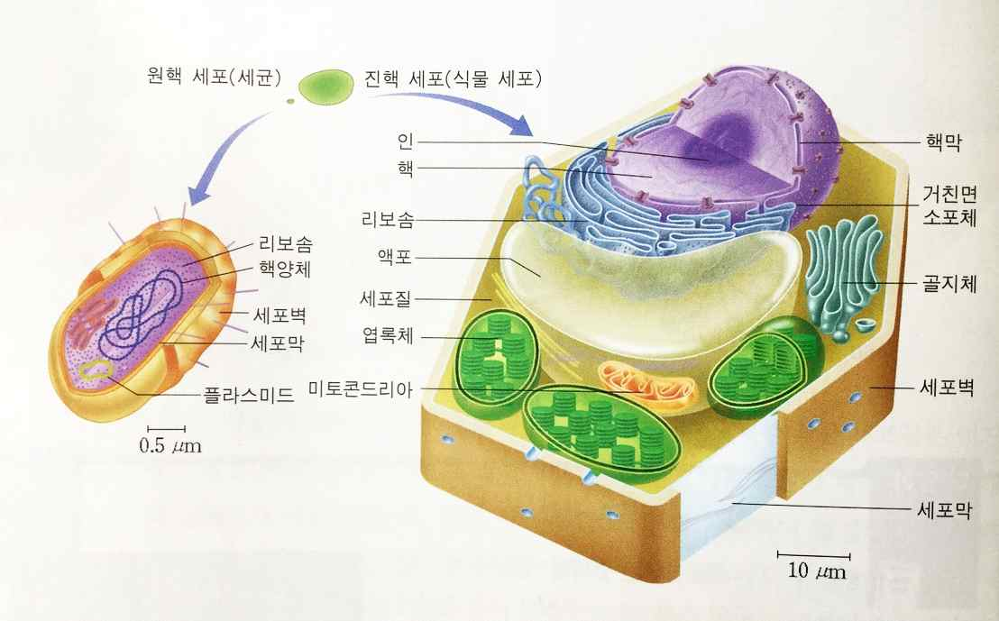

문제 3
지구상에서 살아가고 있거나 살았다가 멸종한 생물은 여러 가지 특징을 공통적으로 갖고 있다. 세포로 구성되어 있거나, 세포 내 구조나 세포 내에서 벌어지는 여러 가지 생화학적 반응이 유사한 점 등을 고려하면 다양한 생물이 모두 최초의 생명체에서 진화했음을 짐작할 수 있다. [50점]
3-1
(가) 최초의 생명체는 원시 세포 단계를 거쳐 생성되었을 것이다. 원시 세포는 막으로 둘러싸인 구조를 갖추고, 자기 복제 체계를 가지며, 필요한 물질과 에너지를 이용하기 위한 물질대사가 일어날 수 있는 체계를 갖추었을 것이다. 오늘날 모든 생명체의 자기 복제 과정에는 DNA와 RNA가 관여하며 이들이 유전 정보를 저장한다. 이 두 분자 중 최초의 원시 세포가 유전물질로 가졌을 분자는 어떤 것이었을까? 왜 그렇게 생각하는가? [25점]
3-2
(나) 약 39억 년 전에 출현한 최초의 생명체는 원핵생물이었으며, 시간이 지나 약 21억년 전 쯤에는 진핵생물이 출현하였다. 진핵생물이 가진 진핵 세포는 원핵 세포와는 달리 유전 물질이 핵막 속에 들어 있고, 골지체, 소포체, 미토콘드리아, 엽록체와 같은 막으로 된 세포 소기관을 갖고 있다. 원핵 세포에서 막으로 된 세포 소기관을 가진 진핵 세포가 생겨난 진화적 과정을 어떻게 설명할 수 있는가? [25점]
